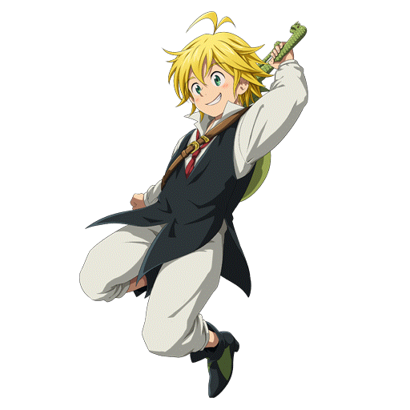
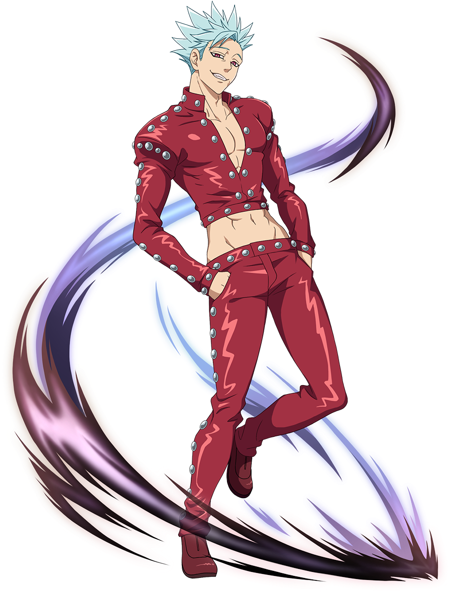
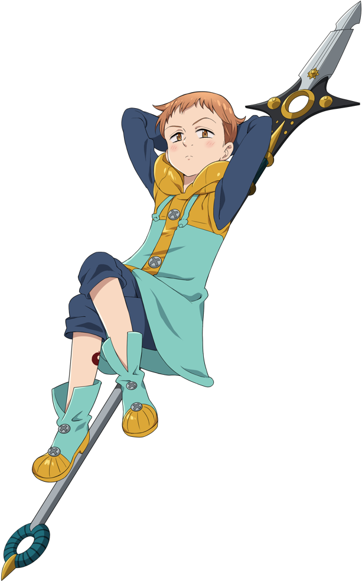
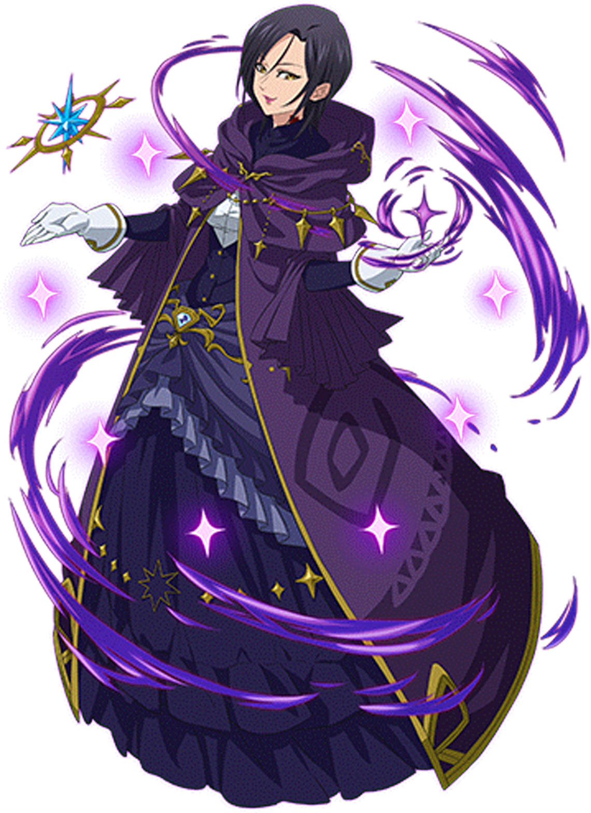
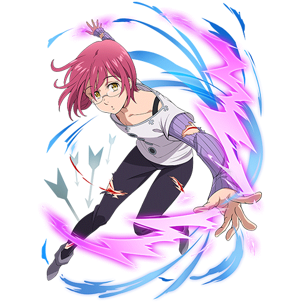
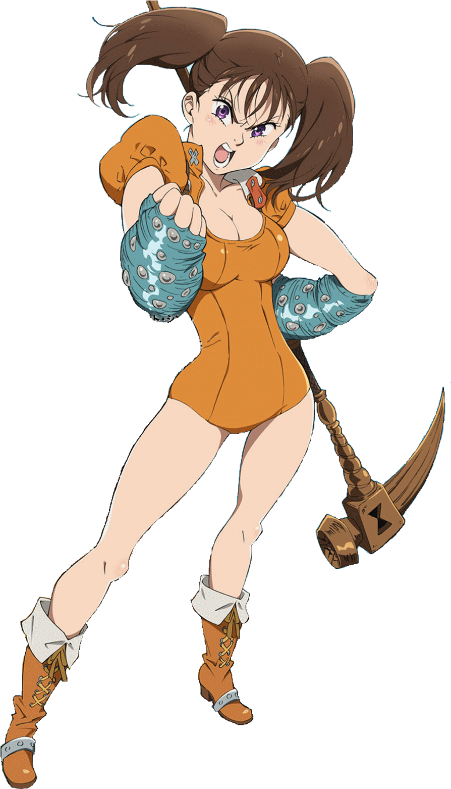
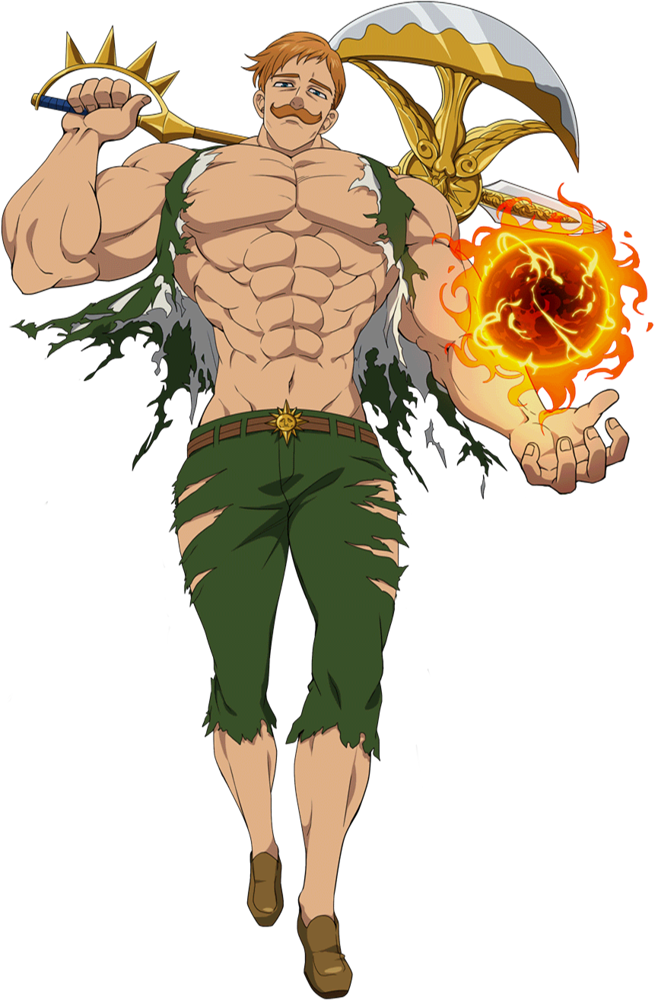

| Meliodas | Bon | King | Merlin | Gowther | Diane | Escanor |
In a world similar to the European Middle Ages, the feared yet revered Holy Knights of Britannia use immensely powerful magic to protect the region of Britannia and its kingdoms. However, a small subset of the Knights supposedly betrayed their homeland and turned their blades against their comrades in an attempt to overthrow the ruler of Liones. They were defeated by the Holy Knights, but rumors continued to persist that these legendary knights, called the “Seven Deadly Sins,” were still alive. Ten years later, the Holy Knights themselves staged a coup d’état, and thus became the new, tyrannical rulers of the Kingdom of Liones.
Based on the best-selling manga series of the same name, Nanatsu no Taizai follows the adventures of Elizabeth, the third princess of the Kingdom of Liones, and her search for the Seven Deadly Sins. With their help, she endeavors to not only take back her kingdom from the Holy Knights, but to also seek justice in an unjust world.